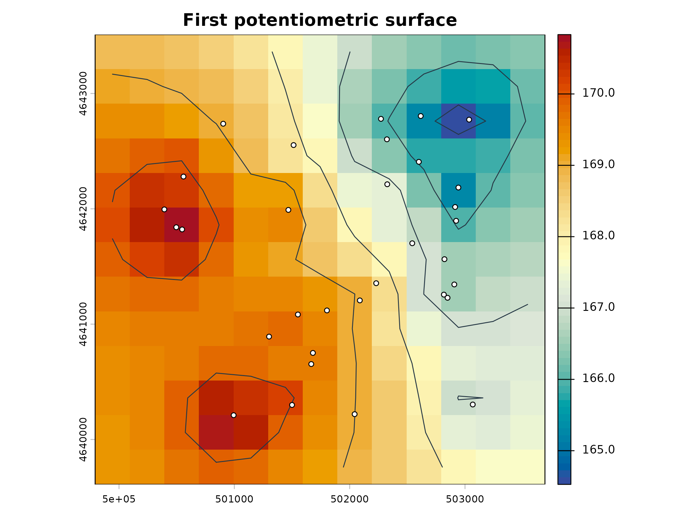

Getting started with potentiomap
getting-started.Rmdpotentiomap turns groundwater-level observations into mapped potentiometric surfaces and related review products. This article uses small synthetic data. It does not demonstrate a groundwater-flow model.
library(potentiomap)
data("synthetic_wells")
points <- ps_make_points(
synthetic_wells,
x = "x", y = "y", value = "gw_elevation", name_col = "well_id",
crs = "EPSG:26916", head_unit = "m", output_unit = "m",
vertical_datum = "synthetic example datum",
surface_reference = "land_surface", metadata_mode = "strict"
)Create a small IDW surface and retain diagnostics and prediction support.
result <- ps_interpolate(
points, methods = "IDW", grid_res = 300,
return = "result", support = TRUE, support_max_distance = 1000
)
result
#> <potentiomap_result>
#> observations: 32
#> methods: IDW
#> status: IDW=success
#> prediction support: available
ps_diagnostics(result, "IDW")
#> $formula
#> [1] "Z ~ 1"
#>
#> $observation_count
#> [1] 32
#>
#> $idw_power
#> [1] 2
#>
#> $idw_nmax
#> [1] 15
#>
#> $return_status
#> [1] "success"
#>
#> $requested_method
#> [1] "IDW"
#>
#> $returned_method
#> [1] "IDW"
#>
#> $finite_prediction_count
#> [1] 169
#>
#> $nonfinite_prediction_count
#> [1] 0
result$support$summary
#> support_class cells percent
#> 1 supported 78 46.153846
#> 2 outside_training_hull 85 50.295858
#> 3 beyond_maximum_distance 0 0.000000
#> 4 outside_mask 0 0.000000
#> 5 prediction_unavailable 0 0.000000
#> 6 multiple_limitations 6 3.550296
surface <- result$surfaces$IDW
contours <- ps_contours(surface, interval = 1)
par(bg = "white")
terra::plot(
surface, col = hcl.colors(64, "RdYlBu", rev = TRUE),
main = "First potentiometric surface"
)
terra::plot(contours, add = TRUE, col = "#263845", lwd = 1)
terra::plot(points, add = TRUE, pch = 21, bg = "white", cex = 0.75)
IDW is deterministic and distance based. TPS produces a smooth penalized surface. Ordinary kriging assumes a constant unknown mean. Universal kriging uses a specified spatial trend. Method selection should consider hydrogeology, network geometry, sample density, model diagnostics, prediction support, validation design, and map purpose.
The raster grid controls both detail and resource use. A smaller cell
size can greatly increase the number of predictions. For larger grids,
use an on-disk terra raster when practical, point
terraOptions(tempdir = ...) to storage with adequate free
space, and review terra::tmpFiles() after interrupted work.
Do not change global terra options inside reusable
functions without restoring them. Remove only temporary files you have
identified as safe to delete.
Export occurs only when an output directory is supplied. GeoPackage is the recommended vector format.
output_dir <- file.path(tempdir(), "potentiomap-getting-started")
exports <- ps_export_surfaces(
result, output_dir, out_stub = "synthetic", points = points,
vector_format = "gpkg"
)
knitr::kable(data.frame(
method = exports$method,
raster = basename(exports$raster)
))| method | raster |
|---|---|
| IDW | synthetic_IDW_surface.tif |
A finite raster is not proof that every cell is well supported. Inspect the support classes and fitted-method diagnostics before using a mapped surface for interpretation or decision making.